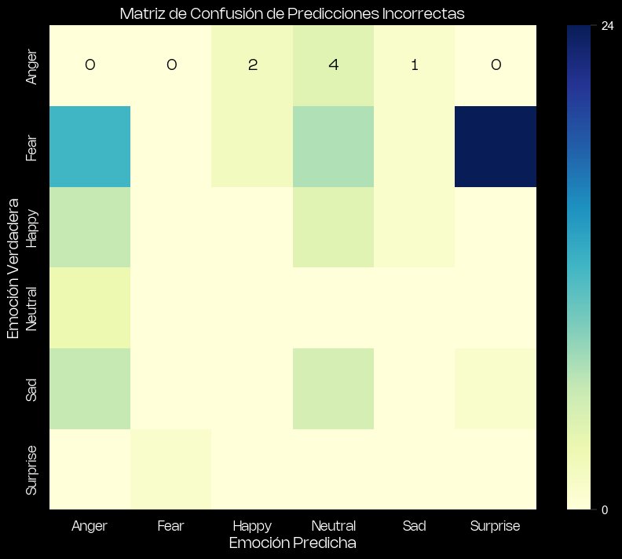

The objective of this project is to develop a deep learning model that can classify human emotions from images. The model is trained on a dataset of facial images categorized into six emotion classes: Anger, Fear, Happy, Neutral, Sad, and Surprise. The project utilizes a convolutional neural network (CNN) architecture to achieve this task, leveraging the ResNet-152 backbone for feature extraction.
When I set out to gather data for this project, my primary intention was to collect as many images of facial expressions as possible. A robust and diverse dataset is crucial because it provides the model with a wide range of examples to learn from, allowing it to capture the subtle nuances and variations in human emotions. By including images from different demographics, lighting conditions, and facial orientations, I aimed to ensure that the model could generalize well to new, unseen images. A comprehensive dataset enhances the model's ability to distinguish between similar emotions and reduces the likelihood of overfitting, ultimately leading to improved accuracy and performance in real-world applications.
I used the FER-2013 as well as Aaditya Singhal's and Jonathan Oheix's dataset, the three, recuperated from Kaggle.
I also manually added and labeled images collected from the internet under creative commons licenses.
# Load previously created Audio features Dataset
file_path = 'C:/Users/Victor Cardenas/Documents/dataset_projects/spotify_streaming/audio_features.csv'
audio_features = pd.read_csv(file_path, encoding='latin1')
# Load Spotify Most Streamed dataset
file_path = 'C:/Users/Victor Cardenas/Documents/dataset_projects/spotify_streaming/Most Streamed Spotify Songs 2024.csv'
spotify_data = pd.read_csv(file_path, encoding='latin1')
The following are the emotions used for training this model:
Typically characterized by lowered eyebrows, tightly pressed lips, and a tense facial expression. The eyes may appear narrowed, and the forehead might have furrows.
Often depicted by wide eyes, raised eyebrows, and a mouth slightly open. The face may show signs of tension, and the expression often conveys alertness or readiness to respond.
Recognizable by a smiling mouth, with cheeks raised and crow's feet around the eyes. A genuine smile, known as the Duchenne smile, also includes the movement of muscles around the eyes.
This emotion serves as a baseline, with no distinctive features of emotional expression. The facial muscles are relaxed, and there is an absence of emotional intensity.
Features include a frown with downturned corners of the mouth, drooping eyelids, and an overall downcast appearance. The eyebrows may also be slightly raised toward the center.
Characterized by wide eyes, raised eyebrows, and a dropped jaw. The expression suggests a sudden awareness or shock, often with an open mouth.
The dataset consists of images categorized into six emotion classes stored in subdirectories named after each emotion. The images are loaded and labeled accordingly.
Below, the corresponding code.
root_dir = "your_path"
sub_folders = ["Anger", "Fear", "Happy", "Neutral", "Sad", "Surprise"]
labels = [0, 1, 2, 3, 4, 5]
data = []
for s, l in zip(sub_folders, labels):
for r, d, f in os.walk(os.path.join(root_dir, s)):
for file in f:
if ".jpg" in file:
data.append((os.path.join(s,file), l))
df = pd.DataFrame(data, columns=['file_name','label'])
The dataset is split into training and validation sets to evaluate the model's performance.
from sklearn.model_selection import train_test_split
X = df
y = df.label
train_df, valid_df, y_train, y_test = train_test_split(X, y, test_size=0.2, random_state=42)
Albumentations library is used for data augmentation to increase the diversity of the training dataset and help the model generalize better.
transform_soft = A.Compose([
A.Resize(cfg["image_size"], cfg["image_size"]),
A.Rotate(p=0.6, limit=[-45,45]),
A.HorizontalFlip(p=0.6),
A.CoarseDropout(max_holes=1, max_height=64, max_width=64, p=0.3),
ToTensorV2()
])
The ResNet-152 model is used as the backbone for this classification task. It is pre-trained on ImageNet and fine-tuned on our emotion dataset.
import timm
model = timm.create_model(cfg["backbone"], pretrained=True, num_classes=cfg["n_classes"]).to(cfg["device"])
The model is trained using the Adam optimizer and CrossEntropy loss function. A cosine annealing learning rate scheduler is used to adjust the learning rate during training.
criterion = nn.CrossEntropyLoss()
optimizer = torch.optim.Adam(
model.parameters(),
lr=cfg["learning_rate"],
weight_decay=0,
)
scheduler = torch.optim.lr_scheduler.CosineAnnealingLR(
optimizer,
T_max=np.ceil(len(train_dataloader.dataset) / cfg["batch_size"]) * cfg["epochs"],
eta_min=cfg["lr_min"]
)
acc, loss, val_acc, val_loss, model = fit(model, optimizer, scheduler, cfg, train_dataloader, valid_dataloader)
The model's accuracy and loss are evaluated on the validation dataset to assess its performance.
model.eval()
final_y = []
final_y_pred = []
for step, batch in tqdm(enumerate(valid_dataloader), total=len(valid_dataloader)):
X = batch[0].to(cfg["device"])
y = batch[1].to(cfg["device"])
with torch.no_grad():
y_pred = model(X)
y = y.detach().cpu().numpy().tolist()
y_pred = y_pred.detach().cpu().numpy().tolist()
final_y.extend(y)
final_y_pred.extend(y_pred)
final_y_pred_argmax = np.argmax(final_y_pred, axis=1)
metric = calculate_metric(final_y, final_y_pred_argmax)
valid_df['prediction'] = final_y_pred_argmax
print(valid_df.head(20))
Once the model finished the whole process, I wanted to test it on a whole new dataset and created a function to print the results:
# Function to predict emotion of a single image
def predict_emotion(image_path):
# Create dataset and dataloader for the single image
dataset = CustomDataset(cfg, image_path)
dataloader = DataLoader(dataset, batch_size=1, shuffle=False)
for step, image in enumerate(dataloader):
if image is None:
continue
X = image.to(cfg["device"])
with torch.no_grad():
y_pred = model(X)
y_pred_argmax = np.argmax(y_pred.cpu().numpy(), axis=1)[0]
emotions = ["Anger", "Fear", "Happy", "Neutral", "Sad", "Surprise"]
predicted_emotion = emotions[y_pred_argmax]
return predicted_emotion
# Traverse the folder structure and predict emotions for each image
def traverse_and_predict(main_folder):
emotions = ["Anger", "Fear", "Happy", "Neutral", "Sad", "Surprise"]
results = []
for emotion in emotions:
folder_path = os.path.join(main_folder, emotion)
for file_name in os.listdir(folder_path):
if file_name.lower().endswith(('.jpg', '.jpeg', '.png')):
image_path = os.path.join(folder_path, file_name)
predicted_emotion = predict_emotion(image_path)
results.append((file_name, emotion, predicted_emotion))
print(f"Image: {file_name}, True Emotion: {emotion}, Predicted Emotion: {predicted_emotion}")
return results
# Example usage
main_folder = r"C:/Users/Victor Cardenas/Documents/MSC/SEMESTRE II/IDI II/PYTHON/data_prueba"
results = traverse_and_predict(main_folder)
# Optional: Print summary of results
correct_predictions = sum(1 for _, true_emotion, predicted_emotion in results if true_emotion == predicted_emotion)
total_predictions = len(results)
accuracy = correct_predictions / total_predictions if total_predictions > 0 else 0
print(f"Total images: {total_predictions}")
print(f"Correct predictions: {correct_predictions}")
print(f"Accuracy: {accuracy:.2f}")
The results were the following:
Total images: 168
Correct predictions: 102
Accuracy: 0.61
At first glance it seems the model is performing quite low (in fact it is), however, when looking at the predictions it did, one can observe the model is predicting with a relatively good accuracy (80%) 4 out of 6 emotions.
| True Emotion | Incorrect | Correct | Total | Incorrect Percentage |
|---|---|---|---|---|
| Anger | 2 | 19 | 21 | 9.523810 |
| Fear | 45 | 18 | 63 | 71.428571 |
| Happy | 7 | 25 | 32 | 21.875000 |
| Neutral | 3 | 20 | 23 | 13.043478 |
| Sad | 9 | 8 | 17 | 52.941176 |
| Surprise | 0 | 12 | 12 | 0.0000 |
Taking a look at the confusion matrix, it is possible to notice 'Anger', 'Fear' and 'Surprise' are being constantly confused. This is something to be fixed in future improvements.
The emotion recognition model demonstrates the potential of deep learning techniques in classifying human emotions from facial images. The project successfully implemented a convolutional neural network with a ResNet-152 backbone, applied data augmentation techniques, and fine-tuned the model using a cosine annealing scheduler.
To further enhance the model's performance, consider the following steps:
Try using other state-of-the-art models like EfficientNet or ViT.
Implement more advanced augmentation techniques to improve generalization.
Explore different learning rates, batch sizes, and other hyperparameters.
Collect more labeled data to improve the model's ability to generalize.
Explore additional features or pre-processing techniques that might enhance performance.
By addressing these areas, the model's accuracy and reliability can be improved, bringing it closer to a deployable solution for real-world applications.